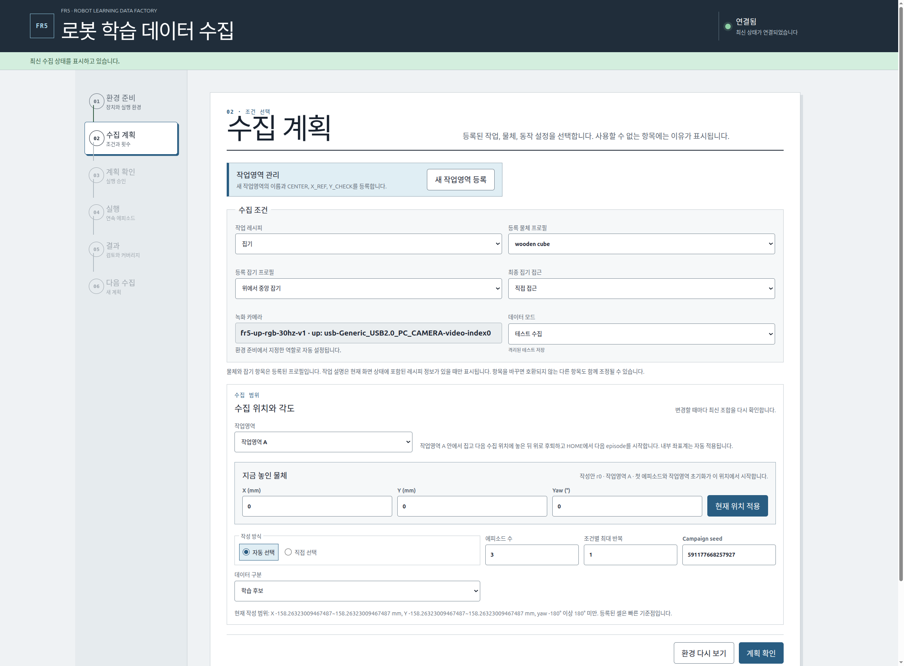
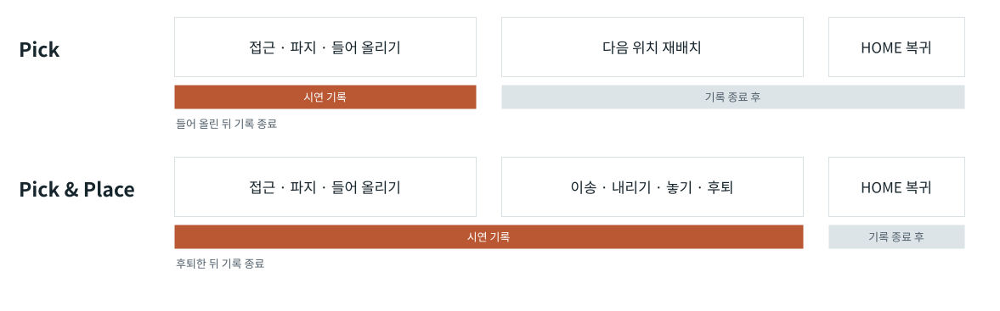

로봇 운용
로봇 시연 수집 시스템
작업 위치와 물체 각도, 시작 자세와 횟수를 정해 시연 데이터를 수집하는 시스템이다. 운영 화면에서 계획을 작성하고, 실행기는 정해진 작업을 순서대로 수행해 결과를 모은다.
수집 운영 화면
실제 제품 · FAKE 모드 실행 예시작업·물체·동작 설정과 수집 위치, 각도, 횟수를 선택한다. 자동 선택과 직접 입력은 같은 작업 계획에 반영된다.

수집 조건 설계
위치·각도·시작 자세
작업영역의 물체 위치·각도와 로봇 시작 자세를 구분해 관리한다. 자동 선택은 등록된 범위에서 조건을 만들고, 직접 선택은 사용자가 지정한 좌표와 순서를 사용한다.
작업 조건 선택
물체·잡기 방식·동작·카메라 등 등록된 설정에서 실행할 조합을 고른다. 작업영역을 바꾸면 해당 좌표계와 호환 설정을 함께 적용한다.
유한한 실행 계획
수집 횟수와 각 작업의 위치·각도·시작 자세를 실행 순서로 고정한다. 설정을 바꾸면 수정한 내용으로 새 계획을 만든다.
반복 수집
한 번에 하나의 작업을 실행하고 저장·기술 검사가 끝나면 다음 작업으로 진행한다. 수집 완료 후에는 기존 설정으로 새 계획을 작성할 수 있다.
상태공간 설계와 실행 모듈
유한 상태공간 설계 프로필이 있는 조합에서는 X·Y 분할과 yaw 구간을 바탕으로 조건을 표본화한다. 물체 크기와 보정 여유를 반영한 작업영역 안에서 좌표를 생성한다. 위 기본 FAKE 화면의 조합에는 이 프로필이 없어 상태공간 설계 기능의 실행 예시로 사용하지 않는다.
조건 생성 모듈 ↗ · 작업 계획과 캠페인 관리 ↗작업과 학습 데이터
작업별 기록 구간
학습할 작업에 따라 기록 종료 시점을 다르게 적용한다. 집기는 들어 올리기까지, 옮기기는 목적지에 놓고 후퇴하기까지 저장한다. 다음 작업을 위한 재배치와 HOME 복귀는 학습 데이터에 포함하지 않는다.

동작 실행기는 로봇의 현재 작업을 관리하고, 기록기는 저장할 구간을 관리한다. 두 상태를 분리해 화면에 표시하므로 로봇이 복귀 중이어도 작업 데이터의 기록은 이미 끝날 수 있다.
작업 정의와 단계별 구현
기본 작업 정의는 집기 5개, 옮기기 9개의 기록 단계를 가진다. 세부 접근 경로는 선택한 동작 변형에 따라 달라질 수 있다. 실제 데이터의 시간 정렬은 기록기의 ROS 시각을 기준으로 수행한다.
실제 작업 정의 ↗ · 작업 실행·기록 종료 처리 ↗관련 시스템
저장되는 데이터다중 센서 기록·영상 검토
작업 중 수집한 영상·상태의 동기화와 변환 후보 검토.
시스템 아키텍처
수집 실행기·기록기·데이터 관리·학습 모듈의 연결.